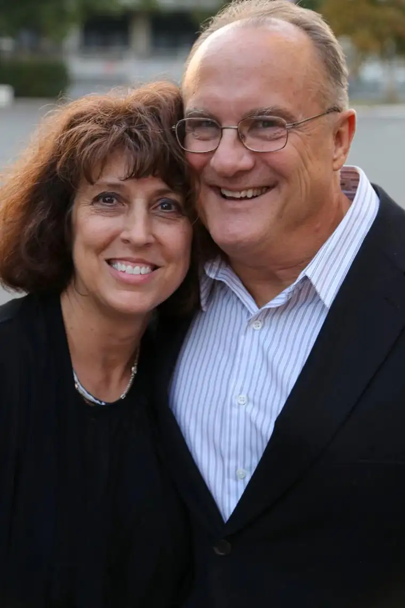

FARGO — When Peter Mehl checked his blood pressure shortly after arriving in the Ukraine on May 11, something seemed off.
“He had me take mine, because he wasn’t sure it was reading right,” recounts his wife, Jill, co-founder of Russian Harvest Ministries, a Christian outreach the local couple founded 25 years ago.
It would be their last conversation. Just as Jill turned away to check her own blood pressure, Peter stood up, and collapsed. An autopsy showed the 61-year-old died instantly.
“They thought it was a blood clot to the lungs,” Jill explains, noting that the cause of death was ultimately determined to be cardiac arrest.
“I felt like my heart was broken,” she says of losing the man she met at age 16, and married at 18.
Despite his recent funeral here, she says, at times it feels like Peter is just overseas doing ministry work, as was usual in the summer months. “He would often go over by himself since I can’t take the heat.”
Though the loss of Peter presents a huge void in the ministry and in her heart, Jill says, she’s determined to carry on with it all, as the couple had discussed.
“He was the face; I was the heart,” Jill says, but the work — which brought them from the comforts of North Dakota to dusty villages and dank streets a world away — continues to be needed.
Jill recently completed the first ministry newsletter without Peter’s help; he was the writer, she admits. And in August, she’ll return to the Ukraine to check on their “spiritual family” there — the workers who run the day-to-day operations.
Natasha Lazuka, who handles finances and serves as interpreter and translator, has been with them nearly from the beginning.
In a letter composed for Peter’s memorial service, she described meeting the couple in 1992, at age 15. “Peter’s fire and great desire to see people saved, his love for the Lord and radical commitment to ministry touched my heart and changed my destiny,” she wrote.
Whether preaching to one person, or thousands, she added, Peter’s passion remained consistent. “It was all possible because he valued one soul so much. That is why he kept going and not stopping, even when everything was against him.”
Local support has come, too, especially from their three adult daughters and church family at Fargo’s First Assembly Church.
Deb Trombley, longtime friend of the couple, says she was stunned to learn of Peter’s passing; a man she considered “larger than life.”
“I always thought that if Peter was not going to come back from the Ukraine, it would be because of the mafia, or the war,” she says. Now, she desires “to pick up every single deposit that God made through this precious friendship and do something for the kingdom to bring a smile to the Savior’s face.”
Jill draws comfort from moments of divine consolation, like when she was praying for direction, and Peter’s cell phone rang.
“It was one of our friends, and she began proclaiming the word of God over me (through the phone),” Jill says. “Everything I had been crying out to God for, he answered instantly.”
Despite the ache, she says, “now that death has hit our family,” a calm also has arrived. “You appreciate life more.”
She also cherishes the stories of how Peter blessed others. “I knew he had, but every time I hear of it, I thank God to realize how he stayed the same. He was a rock.”
[For the sake of having a repository for my newspaper columns and articles, I reprint them here, with permission, a week after their run date. The preceding ran in The Forum newspaper on June 24, 2017.]